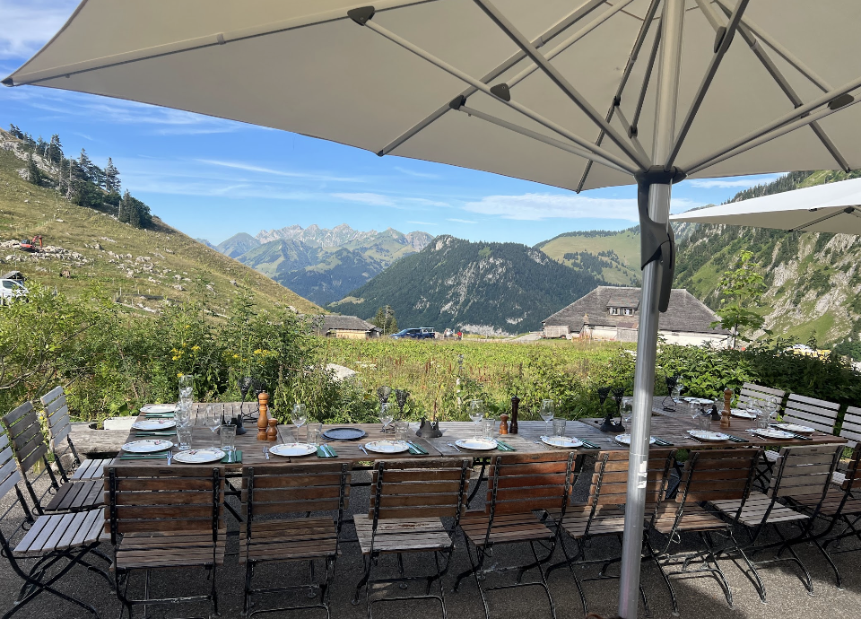

Restaurant d'alpage · Col de Jaman · 1 512 m
Le Manoïre
Au-dessus du lac, au-dessus du bruit, au-dessus du temps.
Au-dessus du lac,
au-dessus du bruit.
Laissez Montreux en bas.
La montée commence.
Au-dessus du temps.
Un lieu qui a attendu. Les murs ont de la mémoire.
Il rouvre le 9 juillet.
Ouverture le 9 juillet 2026
Le Manoïre.
Col de Jaman.
Une table avec vue sur les Préalpes vaudoises.
Une cuisine qui respecte la montagne.

L'Histoire
Un lieu qui a toujours existé.
Il revient.
Le Manoïre a longtemps été une adresse emblématique du Col de Jaman. Un café-restaurant d'alpage, connu pour sa fondue, sa convivialité et sa vue unique sur les Préalpes vaudoises. Un chef étoilé y a même écrit un chapitre de l'histoire du lieu. Puis la fermeture. Des années de silence.
Micka a repris la terrasse trois étés de suite avec un food truck. La clientèle était toujours là. La ville de Montreux lui a confié les murs pour quarante ans. En échange : les travaux. Le projet d'une vie.
L'Expérience
La fondue n'est pas une mode.
Le rösti est un symbole.
Les produits viennent d'artisans que l'on connaît. La viande, le fromage, les légumes — tout a un nom, une origine, une adresse. La cuisine est suisse, généreuse, sincère. La terrasse, elle, ouvre sur les Préalpes vaudoises.
On mange autrement quand on mange à 1 512 mètres.


— Col de Jaman
Au-dessus du monde.
Exactement là.
Dans un monde qui va vite, nous avons choisi la solidité, la cohérence et l'authenticité. Pas pour une saison. Pour des décennies.
La mascotte
Anouck a deux mois.
Elle est déjà chez elle.
Saint-Bernard du Col de Jaman, Anouck grandit au rythme du Manoïre. Suivez son aventure — et celle du lieu — sur les réseaux.
Réserver
Votre table
vous attend.
En terrasse ou en salle, avec vue sur les Préalpes. Réservation directe par téléphone ou par email. Plateforme de réservation en ligne à venir.
Réserver une table →